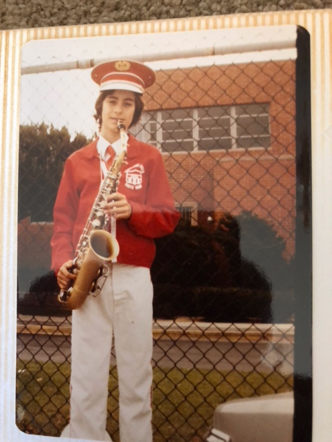
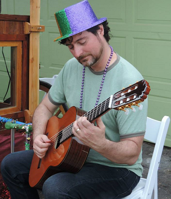

Childhood/Elementary SchoolI began piano lessons at the age of five, and began reading music about the same time I began reading words.In my day, schools offered music instruction and I played the violin in third grade and switched to the saxophone for fourth grade. What I really wanted to play was the oboe, but I described it wrong and just went with what I had. I still have the alto sax, but I almost never play it. |
 | |
Teenage, Early 20sAt the age of 13 I began playing guitar in earnest. After a few years of rock music lessons, I began Classical lessons as as a Sophomore in High School.In college, I played for several rock bands in Chico California, also performing as an acoustic musician. I also continued with piano and picked up mandolin and banjo. |
||
The Collecting YearsAs a IT professional working in San Francisco with a disposable income, one of my favorite stores to visit was Clarion Music, in Chinatown. They had a huge assortment of unusual foreign instruments. A few times a year, I would buy a new instrument and learn to play it.I collected and learned to play the bowed psaltry, two types of lyres, a fretted dulcimer, and a few other Instruments I don't know the name of. This is in addition to the hammered dulcimer I bought at the Dickens Faire, which I use to play weddings and other events. |
||
Return to Classical GuitarUpon becoming a parent, I looked at the number of instruments in the garage and decided to re-dedicate myself to the Classical Guitar. Perhaps because it's not too loud of an instrument, and can be played when children are sleeping in the other room. For the past fifteen years or so, I have been practicing, collecting and cultivating sheet music (in addition to other side musical projects, often using the electric guitar) |
 |